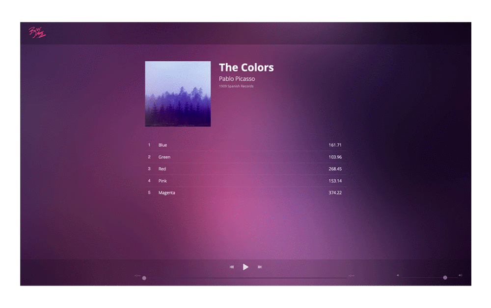

Hi there!
I'm Efren Castillo
New York City-based UX and Visual Designer. Turning challenges into research-based solutions wrapped in empathy for the user.
Latest Projects
Some of the latest projects I’ve been working on:

UX | UI | Branding
Cloudspring
Cloud-based file storage and organization tool that facilitates the user to create and collaborate seamlessly.
Read Case Study

Javascript | JQuery
Bloc Jams
A starter project for Bloc's jQuery-driven music player app.
Visit WebsiteMy Process
Whenever I start a project, and particularly when I approach the design part of it, I always ask myself: “How can I design this interface in a way that is easy to use?” My process includes time to think about usability and how the end-user would interact with the product being designed.